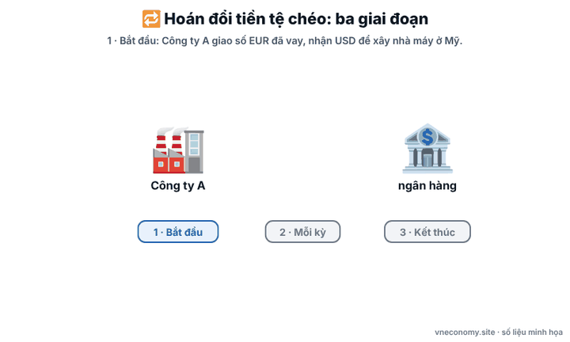
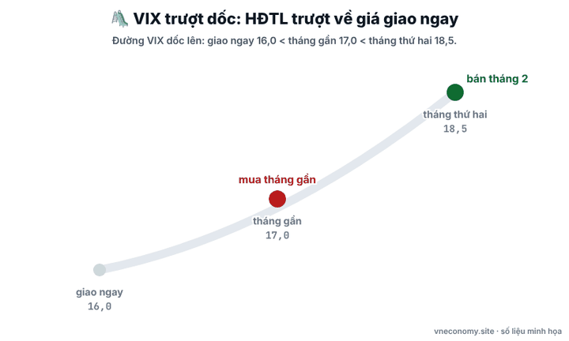

Vĩ mô · Hướng dẫn
Hoán đổi, kỳ hạn và hợp đồng tương lai: cơ chế từng bước
Chín đoạn hoạt hình cho thấy phái sinh làm gì với một danh mục: đo rủi ro đang có, chọn mức rủi ro muốn có, rồi dùng hợp đồng để lấp khoảng chênh
Điểm chính
- Một công thức định cỡ: số hợp đồng = (rủi ro muốn có − rủi ro đang có) ÷ rủi ro của một hợp đồng. Kết quả âm thì bán, dương thì mua. Với trái phiếu, rủi ro là BPV; với cổ phiếu là beta × giá trị; với hoán đổi lãi suất là thời lượng.
- Dựng hoán đổi: trả dòng tiền của thứ bạn đang có, nhận dòng tiền của thứ bạn muốn có. Danh nghĩa là phần bạn muốn thay đổi. Hoán đổi tiền tệ đổi gốc lúc đầu và lúc cuối theo cùng một tỷ giá.
- Giá hợp đồng tương lai mang thông tin: lãi suất = 100 − giá; hợp đồng lãi suất quỹ liên bang cho xác suất Fed tăng lãi; ngày đáo hạn giá tương lai phải gặp giá giao ngay (VIX trượt dốc, basis trái phiếu).
Phần tiếp theo của biểu đồ lãi lỗ quyền chọn. Mỗi đoạn chạy khoảng 20 giây rồi dừng 4 giây ở đáp án. Màu giữ nguyên trong mọi đoạn: tím là thứ bạn đang có, xanh dương là mục tiêu, cam là một hợp đồng, xanh lá là mua hoặc nhận, đỏ là bán hoặc trả.
1 · Định cỡ: cần bao nhiêu hợp đồng
Mọi câu hỏi định cỡ đều đi qua ba bước: đo rủi ro đang có, đo rủi ro muốn có, rồi chia khoảng chênh cho rủi ro của một hợp đồng.
Số hợp đồng = (muốn có − đang có) ÷ một hợp đồng · âm → bán · dương → mua


2 · Dựng một hoán đổi
Hoán đổi là hai dòng tiền chạy ngược chiều. Chân bạn trả triệt tiêu thứ bạn đang có; chân bạn nhận là thứ bạn muốn có. Câu hỏi thường yêu cầu bốn ô: kỳ hạn, dòng tiền, danh nghĩa và ngày thanh toán.


3 · Đọc lãi suất từ giá hợp đồng tương lai
Giá hợp đồng lãi suất được yết theo kiểu 100 − lãi suất. Bán hợp đồng hôm nay là khóa lãi suất vay; giá hợp đồng lãi suất quỹ liên bang cho biết thị trường đặt cược bao nhiêu vào một lần tăng lãi.

4 · Biến động và sự hội tụ
Hoán đổi phương sai trả theo bình phương biến động, nên một điểm biến động đáng khoảng 2 × giá thực hiện điểm phương sai. Hợp đồng tương lai phải bằng giá giao ngay vào ngày đáo hạn: đó là nguồn lợi nhuận của giao dịch trượt dốc VIX và giao dịch basis trái phiếu.


Phương pháp và nguồn
Mọi con số là ví dụ minh họa, không phải giá thị trường. Các công thức dùng trong các đoạn:
- BPV = thời lượng điều chỉnh × giá trị × 0,0001 · một HĐTL trái phiếu ≈ BPV trái phiếu rẻ nhất để giao (CTD) ÷ hệ số chuyển đổi (CF).
- HĐTL chỉ số: N = (beta mục tiêu − beta hiện tại) ÷ beta hợp đồng × giá trị danh mục ÷ giá trị một hợp đồng.
- Hoán đổi lãi suất: danh nghĩa = (thời lượng mục tiêu − thời lượng hiện tại) ÷ thời lượng của hoán đổi × giá trị danh mục.
- Lãi suất = 100 − giá · P(tăng) = (lãi suất ngụ ý − mức hiện tại) ÷ (mức sau khi tăng − mức hiện tại).
- Danh nghĩa phương sai = danh nghĩa vega ÷ (2 × giá thực hiện) · giá trị = danh nghĩa phương sai × (phương sai kỳ vọng − giá thực hiện²) × hệ số chiết khấu. Biến động viết bằng số điểm (20, không phải 0,20).
Tài liệu học tập cá nhân, không phải khuyến nghị đầu tư.